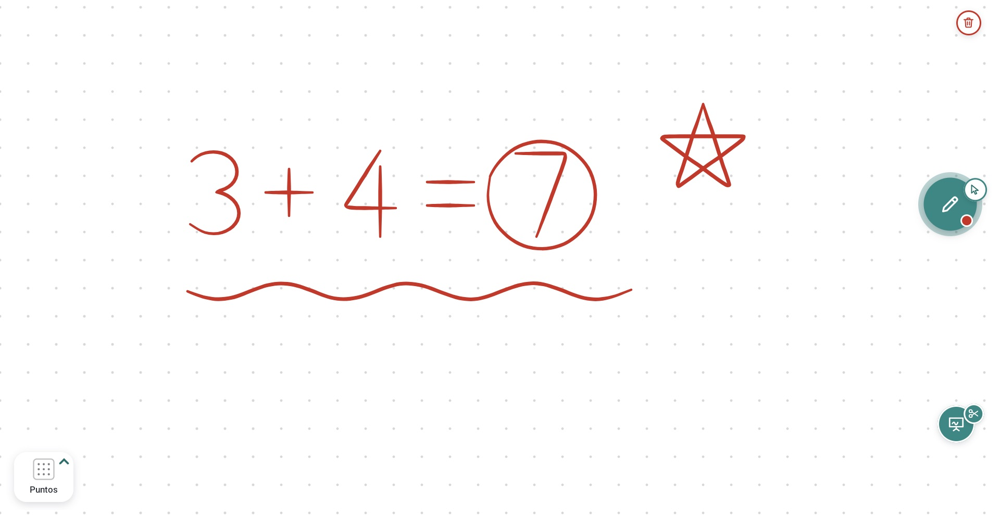
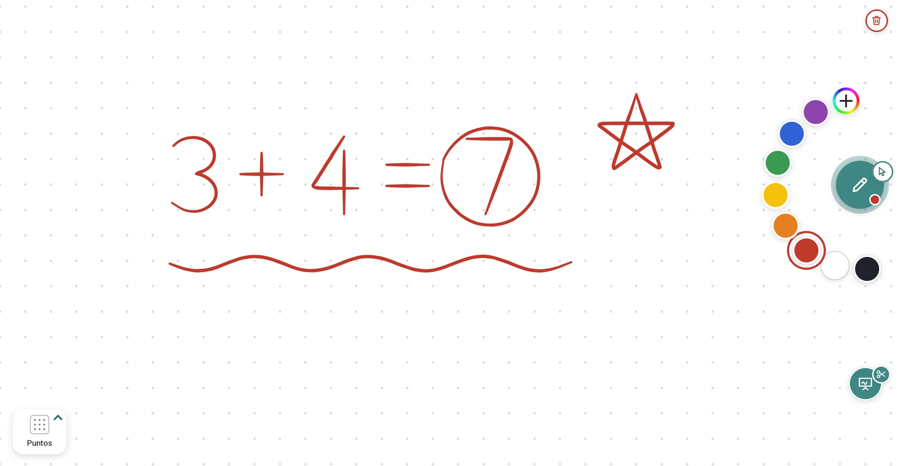
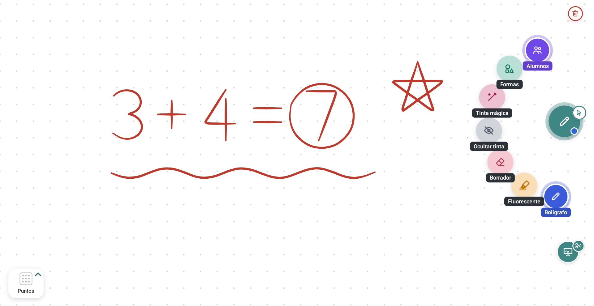

Escribe sobre cualquier fuente
Sobre una web, el libro digital o Windows. La tinta de cada pestaña del navegador se guarda aparte.
Para paneles interactivos ViewSonic ViewBoard
Marcar Pro es una capa transparente para anotar sobre el navegador, el libro digital, un PDF o el PC del aula, sin cambiar de app. Con pizarra blanca, recortes y varios alumnos escribiendo a la vez.

Qué hace
Se toca el orbe y se escribe. Todo lo demás está a un toque y se queda donde lo dejaste.
Sobre una web, el libro digital o Windows. La tinta de cada pestaña del navegador se guarda aparte.
Desliza y amplía con los dedos. Fondos liso, puntos, cuadros, líneas y doble pauta para caligrafía.
Enmarca un ejercicio y pásalo a la pizarra con espacio debajo para resolverlo. También desde el PC.
El lápiz escribe, el dedo mueve y usa las apps, y el puño o la palma borran, como en una pizarra de verdad.
Cada uno con su trazo y su borrador, sin pisarse. Ideal para salir a la pizarra en grupo.
Descarga las mejoras y las instala cuando nadie escribe. Nunca en mitad de una clase.
Sin menús
En los paneles infrarrojos todo llega como "dedo". Marcar Pro distingue el lápiz, el dedo y el puño por el tamaño del contacto, así que no hay que cambiar de herramienta para borrar.
| Toca | Hace |
|---|---|
| Lápiz | Escribe con la herramienta y el color elegidos |
| Dedo | Usa las apps de debajo, o selecciona, mueve y lanza lo escrito |
| Puño o palma | Borra solo lo que toca |
| Dos dedos | Amplía o gira lo seleccionado; en la pizarra, la amplía |
Un vistazo


Instalar · unos 5 minutos
Con el panel en Android, abre en su navegador la última versión y toca el archivo MarcarPro-….apk.
Si Android avisa de que el navegador no puede instalar apps, toca Ajustes, activa «Permitir de esta fuente» y vuelve.
Se abre ese ajuste solo: activa Marcar Pro y vuelve. Aparece el orbe verde.
Al tocar las tijeras sale un aviso con un botón que te lleva al ajuste. Sirve para recortar y para usar las apps con el dedo.
La primera vez que haya una versión nueva, un aviso te lleva a «Permitir de esta fuente». Después ya no hay que hacer nada.
Para recortar desde el PC, Marcar Pro usa el Recortar del propio panel y te pedirá una vez ver las imágenes. Si además activas «Acceso a todos los archivos», borra la copia que el panel guarda de cada recorte.
Preguntas
Está hecha y probada en el ViewSonic ViewBoard IFP7533 (Android 13). También debería funcionar en otros paneles y tabletas con Android 8 o superior (recortar la pantalla necesita Android 11); si la pruebas en otro modelo, cuéntalo en GitHub. Lo que es propio de ViewSonic, como escribir sobre el PC sin que el trazo llegue a Windows o recortar desde el PC, solo está en sus paneles.
No. Es gratuita, sin anuncios ni cuentas, y su código es libre (GPL-3.0): cualquiera puede revisarlo y mejorarlo.
No. Lo que se escribe se guarda solo en el panel. La única conexión a Internet es para comprobar en GitHub si hay una versión nueva. Con la accesibilidad activa lee la barra de direcciones del navegador para dar a cada pestaña su propia tinta, pero no guarda ni envía esas direcciones.
No la toca ni la desactiva: conviven. Marcar Pro es otra app que puedes abrir cuando quieras.
Sí. El código está en github.com/maestroseb/marcarpro. Si repartes una versión modificada, publica también su código.